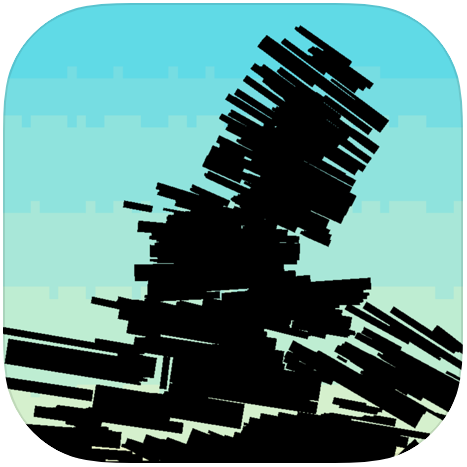
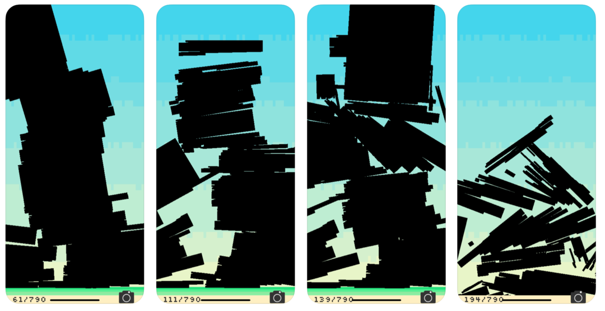
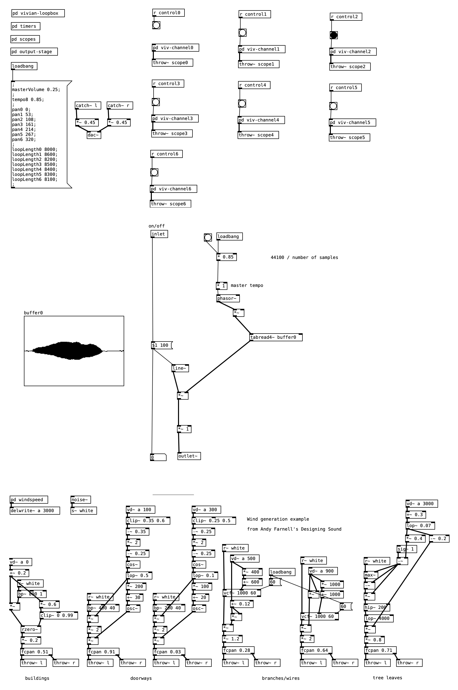

This game answers the question: what if I could play Tetris with the big black censored blocks of the Mueller Report?
This is a building game based on the Open Redacted Blocks (ORB) Project. This is the first creative project to use the Open Redacted Block repository.
The ORB Project's mission is to provide an open set of data and visual assets to allow artists and designers easy access to ORBs (Open Redaction Blocks) for use in their creative works. All ORB assets and data are released under a Creative Commons license, and are available for free to the public at http://orb-project.us and on Github.

The background music is a Pure Data patch that plays sampled cellos on the Vivian Loopbox, alongside generated wind from Andy Farnell's excellent book
Designing Sound.
